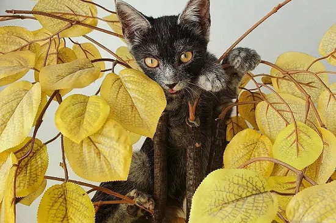
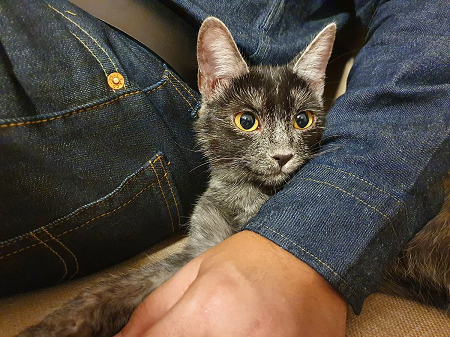
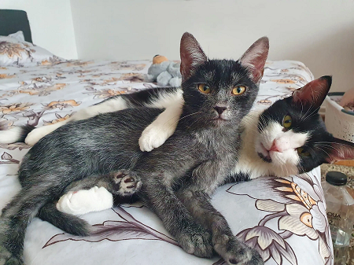

Волчья грация и цена на вес золота — вся правда о новой трансильванской кошке
Мир кошек постоянно удивляет, но трансильванская порода выходит за рамки привычного. Эта порода, известная также как «трансильванская кошка волкокот», была выведена в Карпатах, на территории Румынии, где дикая природа вдохновила селекционеров на создание настоящего кошачьего феномена.
Особенности внешнего вида
Трансильванская кошка (волкокот), фотографии которой набирают популярность в Интернете, выглядит впечатляюще. Её серебристо-серая шерсть средней длины, напоминающая волчью, прекрасно защищает от холода, а яркие глаза создают образ дикого, но дружелюбного существа. Лапы и хвост длиннее, чем у обычных кошек, что придаёт ей особую грациозность и величие. Трансильванская кошка — это истинное воплощение дикой грации и кошачьего очарования.
В описании породы волкокота можно выделить следующие черты:
- Средний и крупный размер.
- Серебристо-серая шерсть с волчьим оттенком.
- Проникающий взгляд зелёных или янтарных глаз.
- Сильное и мускулистое тело.
Особенности характера
Несмотря на свою дикую внешность, трансильванская кошка — это ласковое и умное животное. Они привязаны к своему хозяину, но сохраняют независимость, что делает их отличным выбором для тех, кто много работает и не всегда может уделить время питомцу. Эти кошки не только могут изучить несколько команд, но и любят проводить время в игре и обучении. Трансильванская порода кошек — это настоящая находка для тех, кто хочет завести уникального и преданного друга. Волчий облик, грациозность и особый характер делают эту породу востребованной среди любителей кошек. Если вы задаётесь вопросом, стоит ли приобретать трансильванскую кошку, ответ однозначен: да! Только учтите, что трансильванская кошка — недешёвое удовольствие, но она точно стоит каждого вложенного в неё евро.